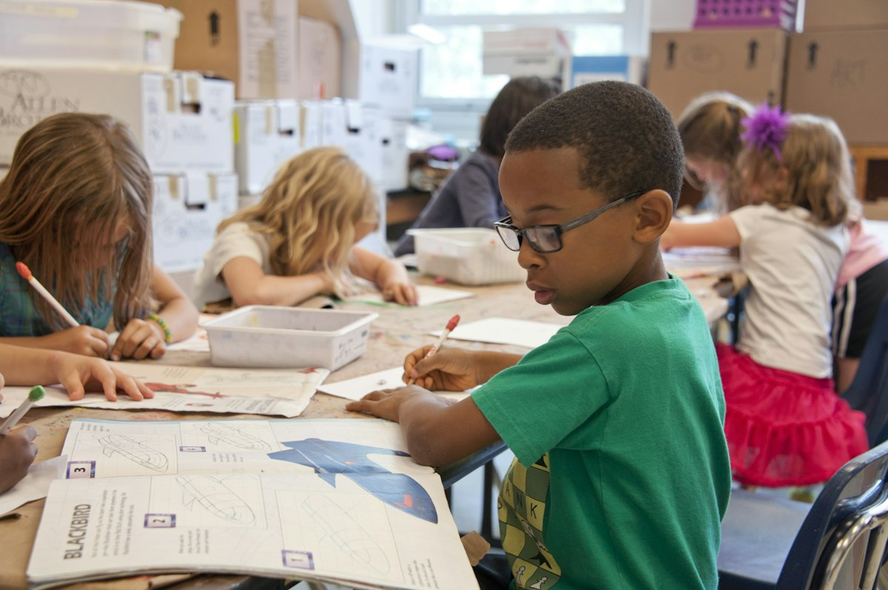

18 months – 3 years
Toddler Program
A gentle, nurturing space for early independence, language, movement, and sensory discovery.
Explore ProgramDiscover a nurturing learning environment where children explore, create, and grow with confidence through the Montessori approach.
Prepared environment
Calm, curious, capable
Our Philosophy
We create calm, beautiful spaces where children build independence, follow their curiosity, and feel deeply respected.
Children choose meaningful work, care for themselves and their environment, and grow confident through real accomplishment.
Hands-on materials and thoughtful lessons invite children to discover concepts at their own pace, with joy and purpose.
We see each child as capable and unique, offering guidance with warmth, patience, and deep respect for their individuality.
Programs
A gentle, nurturing space for early independence, language, movement, and sensory discovery.
Explore Program
A rich, prepared environment supporting practical life, sensorial learning, language, and mathematics.
Explore ProgramConfident school readiness through literacy, reasoning, collaboration, and independent learning.
Explore ProgramDaily Rhythm
Warm greetings, songs, and a calm start to the day.
Pouring, sorting, and caring for self and environment.
Focused, uninterrupted time with chosen materials.
Nature play, movement, and joyful discovery outside.
Shared stories, gratitude, and a peaceful closing.

Environment
Every corner of Little Roots is thoughtfully prepared to invite calm, concentration, and independence. Natural materials, child-sized furniture, and beautiful Montessori tools help children feel capable and at home.
Join the Little Roots community and discover how Montessori learning can nurture your child's confidence, curiosity, and love for learning.